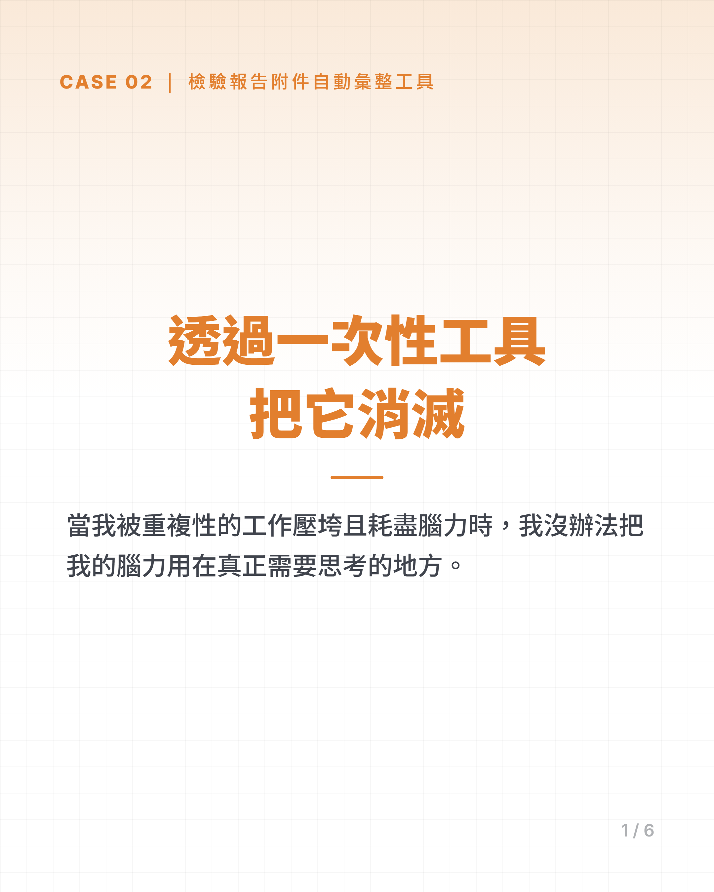
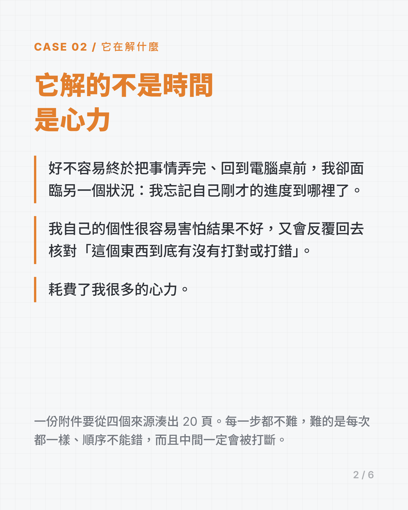
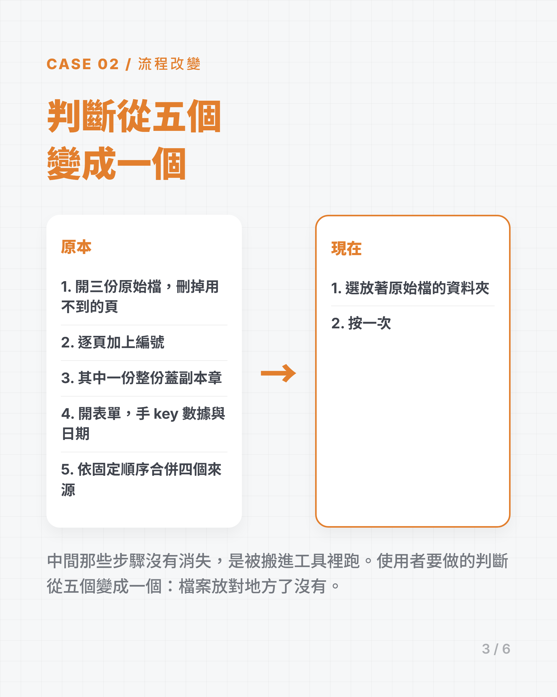
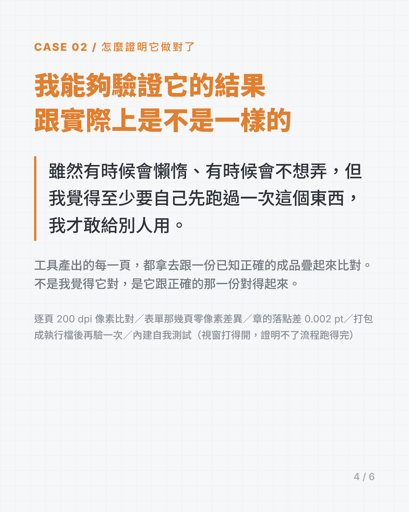
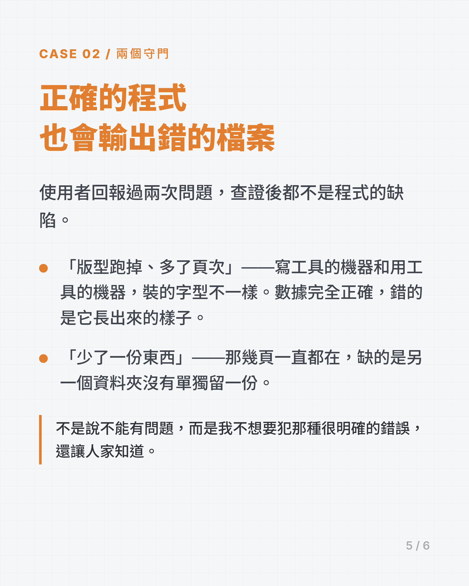
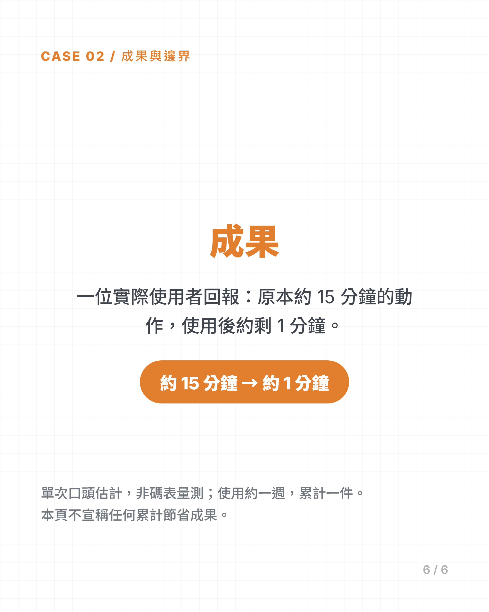

一、它解的不是時間，是心力
一份要交出去的附件，內容分散在三份儀器輸出的 PDF 和一份要手填的表單裡：
- 每一份都要照固定規則處理：挑掉用不到的明細頁、逐頁標上編號、其中一份要整份蓋上副本章。
- 表單裡的數據與日期，原本是看著儀器輸出一格一格手 key 進去。
- 最後要把四個來源接成一份順序固定的附件。
這些步驟沒有一個是難的。難的是它們每次都一樣、順序不能錯，而且中間一定會被打斷。
二、流程改變
原本流程
- 開三份原始檔，各自刪掉用不到的頁
- 逐頁加上編號
- 其中一份整份蓋副本章
- 開表單，對照著手 key 數據與日期
- 四個來源依固定順序合併
工具流程
- 選放著原始檔的資料夾
- 按一次
中間那些步驟沒有消失，是被搬進工具裡跑。使用者要做的判斷從五個變成一個：檔案放對地方了沒有。
三、怎麼證明它做對了
這個案子沒有「看起來對就好」這個選項，因為輸出是要交出去的正式附件。所以驗收全部對照既有的正確成品做——不是我覺得它對，是它跟已知正確的那一份對得起來。
量測方式（這些是收據，不是重點）：
- 逐頁 200 dpi 像素比對
- 表單那幾頁做到零像素差異（150 與 300 dpi 各驗一次）
- 章的落點以點為單位量，與既有版本相差 0.002 pt
- 打包成執行檔後再驗一次，與腳本版本逐頁像素差 0
- 內建自我測試：不開視窗跑完整條流程——因為「視窗打得開」證明不了「流程跑得完」
四、正確的程式，也會輸出錯的檔案
這個案子最花時間的部分不在功能，在發現程式沒錯、但環境會讓它產出壞檔案。使用者回報過兩次問題，兩次查證後都不是程式的缺陷：
- 「版型跑掉、右上角多了頁次」——查下去兩件事是同一個成因：寫這支工具的機器，跟實際拿它來用的機器，裝的字型不一樣。缺字型的那一台會自動換一個字型頂替，行距被撐開、頁數變多、頁碼跟著錯。數據完全正確，錯的是它長出來的樣子。
→ 真正的代價是「在開發的機器上測出來的頁數不可信」。所以加了守門：選表單時先檢查這台機器有沒有裝它需要的字型，沒有就先講，不要等檔案寄出去才發現。 - 「產出的檔案少了一份東西」——查下去，最終附件裡那幾頁一直都在，而且缺了程式會直接停住、不會默默少頁。真正缺的是另一個資料夾裡沒有單獨留一份。
→ 補上單獨複製一份（是複製不是搬移，搬走會讓同一件重跑時找不到來源）。
使用者回報的是症狀，症狀跟缺陷經常不在同一個地方。先查證再改，不然會去修一段本來就是對的程式。
五、成果與邊界
已完成：視窗版工具與可直接執行的版本（換機器只需要指一次表單資料夾）、兩個環境守門、一份使用說明。
一位實際使用者回報：原本約 15 分鐘的動作，使用後約剩 1 分鐘。
約 15 分鐘 → 約 1 分鐘
這是單次口頭估計，不是碼表量測。
使用時間約一週，目前累計一件。樣本不足以宣稱常態成果，因此本頁不寫任何累計節省數字。下一步是累積更多件數，並在完整的真實情境下再驗一次。
六、案例卡






1 / 6